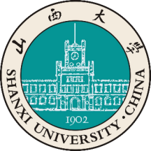
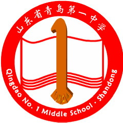
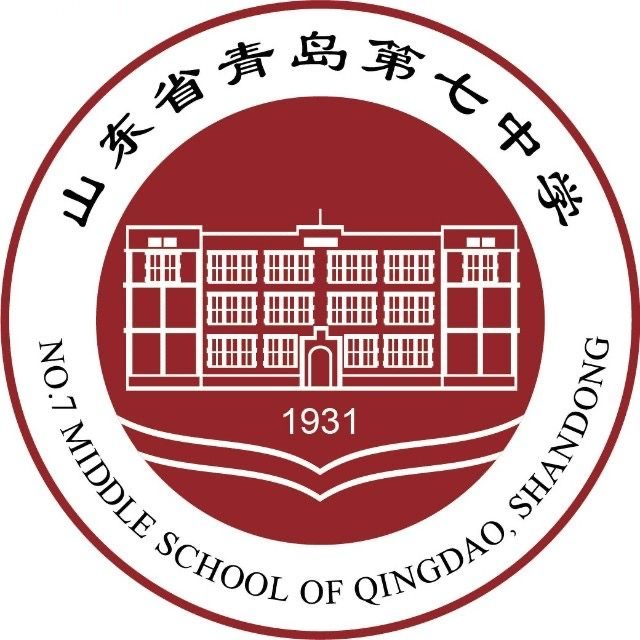

教育背景

2023 - 至今
山西大学
信息管理与信息系统专业（国家级一流专业建设点）| 管理学学士
主修课程：数学分析、概率论与数理统计、数据结构与算法、信息资源管理

2020 - 2023
山东省青岛第一中学
自招英才班 | 高中
连续三年担任班长职务，多次被评选为校三好学生和优秀团员

2017 - 2020
山东省青岛第七中学
2017级2班 | 化学课代表 | 初中
2011 - 2017
青岛莱芜一路小学
2011级2班 | 信息课代表 | 小学
科研技能
熟练运用各类办公软件
计算机二级 MS Office 良好等级
较强的文献管理能力
熟练使用 Zotero 进行文献整理与引用
编写程序的扎实功底
掌握 C++、Python、Java 等编程语言
较强的文献检索能力
掌握中英文数据库与学术论文检索方法
学科竞赛
全国人工智能应用创新大赛
2025.03 – 2025.10 国家级一等奖
《智能体驱动下的山西非遗数字化创新传播与商业化探索》设计 AI Agent “晋小韵”。
- ⭐ 构建智能体的提示词体系和交互逻辑
- ⭐ 基于大语言模型实现个性化对话和多轮语义理解，完成智能体的形象设定、知识调用和任务流编排
- ⭐ 最终全国总决赛进行线上路演
学创杯全国大学生创业综合模拟大赛
2025.03 – 2025.10 国家级一等奖
在 ERP 模拟企业运营中，使用《理财之道》平台进行企业财务决策模拟。
- ⭐ 综合运用财务工具模型和经营分析方法
- ⭐ 完成资金配置、投资决策、市场竞争、风险控制等操作
- ⭐ 推进企业经营绩效的模拟优化
全国大学生市场调查与分析大赛
2024.10 – 2025.04 省级一等奖
《智联纽带牵供需，高校求职无忧愁——智联招聘助力高校学生求职准备与应对策略调查》
- ⭐ 基于描述性统计，分析用户功能使用偏好、需求满意度及改进建议
- ⭐ 采用 K-means 聚类模型细分潜在用户群体，探究其动机和发展路径
- ⭐ 运用 SnowNLP 分析用户评论情感倾向，提出针对性优化策略，提升平台用户体验与影响力
全国大学生数字贸易综合能力大赛
2025.01 – 2025.10 国家级二等奖
⭐ 依托义乌商贸大模型和算力，将 AI 工具深度应用于优化选品、多语种营销、智能客服等全链路环节，实现 AI 技术赋能传统商贸。
荣誉奖项
- 山西大学 2024-2025 学年一等学业奖学金
- 山西大学 2024-2025 学年三好学生
- 山西大学 2023-2024 学年二等学业奖学金
- 山西大学 2023-2024 学年优秀学生干部